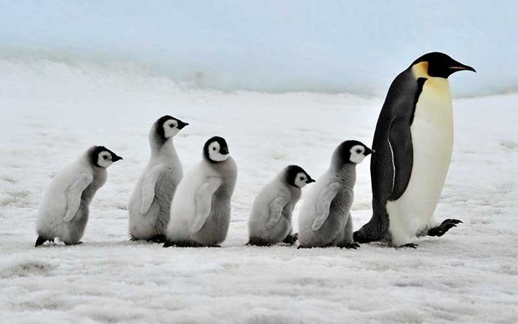
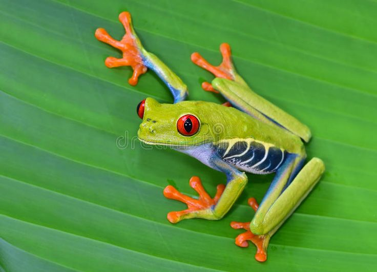
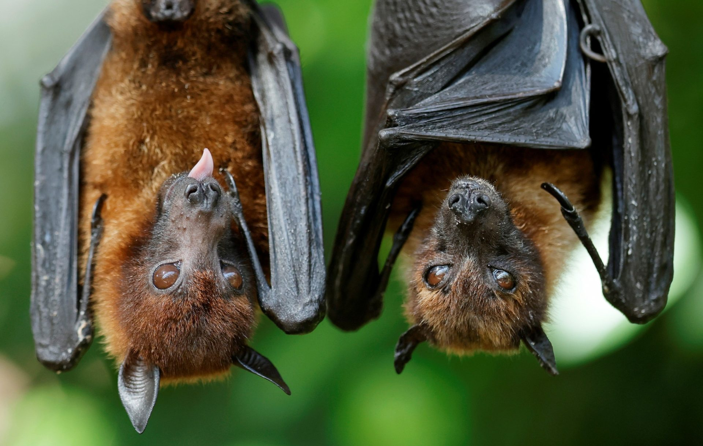

Animalium
Inicio
Galería
Contacto
Galería de Animales
Pequeño mamífero cubierto de púas que se enrolla como defensa. Activo al anochecer y muy popular como mascota.

Ave marina que no vuela. Gran nadador, adaptado al frío. Vive en el hemisferio sur.

Anfibio de colores vivos que vive entre hojas y ramas. Usa dedos pegajosos para trepar.
El animal más grande del planeta. Se alimenta de kril y habita en todos los océanos.
Reptil marino longevo que recorre miles de km para anidar. En peligro por la contaminación.

Único mamífero que vuela. Usa ecolocalización y controla plagas de insectos.
Mamífero chino que se alimenta de bambú. Es símbolo mundial de conservación.
Animal doméstico ágil y fuerte, usado históricamente en el trabajo y transporte.
Ave de plumaje rosado que habita lagos y se alimenta de crustáceos.